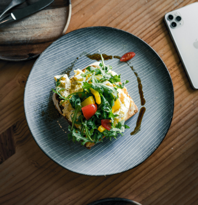
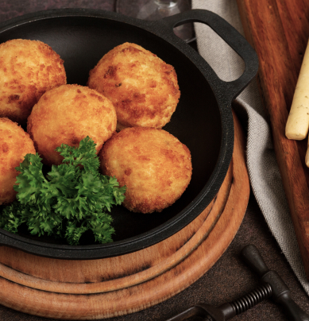
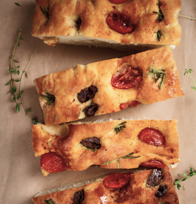

<!DOCTYPE html>
<html lang="bt-br">

<head>
    <meta charset="UTF-8">
    <meta name="viewport" content="width=device-width, initial-scale=1.0">
    <title>Moretti Caffè | Cardápio</title>
    <meta name="description" content="Moretti Caffè é um restaurante / café inspirado na culinária italiana. Venha saborear o melhor da tradição italiana! Localizado em Belo Horizonte, MG.">

    <link rel="stylesheet" href="../../static/style/css/style.css">

    <!-- tipografias -->
    <link rel="preconnect" href="https://fonts.googleapis.com">
    <link rel="preconnect" href="https://fonts.gstatic.com" crossorigin>
    <link href="https://fonts.googleapis.com/css2?family=Afacad&family=Dancing+Script:wght@500&family=Federo&display=swap" rel="stylesheet">

    <script>document.documentElement.className += " js";</script>
</head>

<body>
    <header class="header2">
        <script>
            window.LOGO_URL = '../../static/img/svg/';
        </script>
        <a href="../">
            
        </a>
        <a href="../../">
            
        </a>
    </header>
    <article class="cardapio-categoria">
        <h1 data-get-api="categoria-titulo" data-scroll-element="to-right"></h1>
        <div data-get-api-container="categoria" class="cardapio-pratos-flex">
            <!-- <div data-scroll-element="to-right" class="cardapio-prato">
                <div class="cardapio-prato-image">
                    
                    <div>
                        <p>R$ 22</p>
                        <p>Bruschetta al Pomodoro</p>
                    </div>
                </div>
                <p>Fatias de pão rústico com tomates frescos, manjericão, azeite extravirgem e alho assado, levemente tostadas.</p>
            </div>
            <div data-scroll-element="to-right" class="cardapio-prato">
                <div class="cardapio-prato-image">
                    
                    <div>
                        <p>R$ 28</p>
                        <p>Arancini di Prosciutto</p>
                    </div>
                </div>
                <p>Bolinhos de risoto crocantes, recheados com presunto de Parma e mozzarella derretida. Molho de tomate caseiro.</p>
            </div>
            <div data-scroll-element="to-right" class="cardapio-prato">
                <div class="cardapio-prato-image">
                    
                    <div>
                        <p>R$ 24</p>
                        <p>Focaccia alla Moretti</p>
                    </div>
                </div>
                <p>Focaccia artesanal com alecrim, azeitonas e sal grosso, acompanhada de azeite e vinagre balsâmico.</p>
            </div> -->
        </div>
    </article>
    <footer class="footer">
        <p>Desenvolvido por Mariana Morais © 2024.</p>
    </footer>

    <script type="module" src="../../static/js/script.js"></script>
</body>

</html>